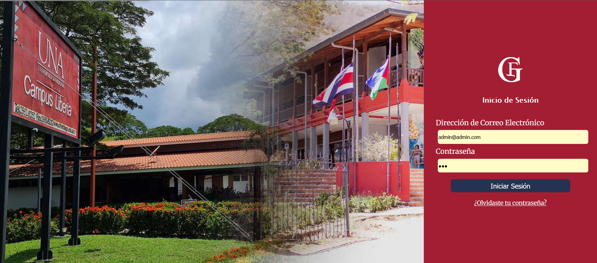
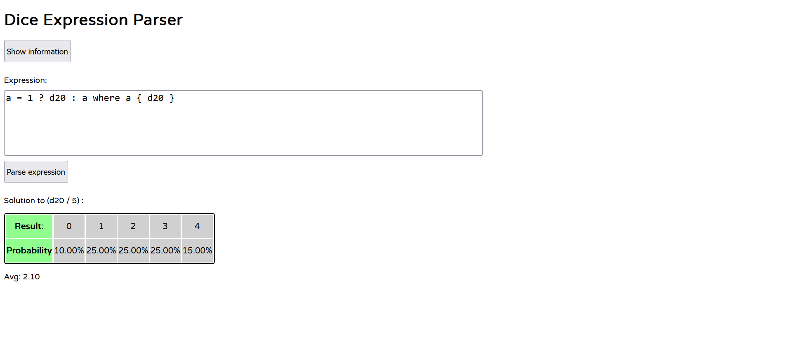
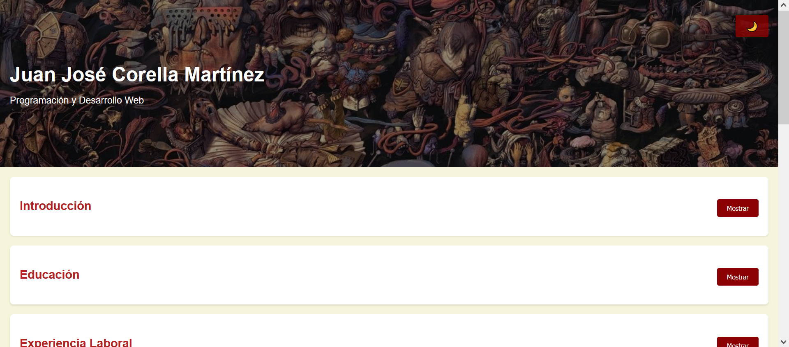

Programación y Desarrollo Web
Un sistema de gestión para los trabajos finales de graduación en la Universidad Nacional de Costa Rica, fué desarrollado con React y EntityFramework principalmente
 Ver ProyectoUn analizador de "expresiones probabilísticas". La lógica del programa está escrita en Rust y el FrontEnd está escrito también en Rust utilizando el FrameWork LeptosRS, el cuál se comunica con el navegador usando WebAssembly
 Ver ProyectoUn portafolio mostrando mis habilidades y destrezas como programador. Hecho solamente con HTML, CSS, y vanilla JavaScript
 Ver Proyecto